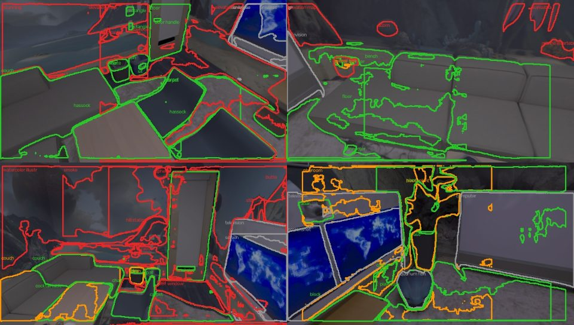

Detect, segment and track
Every frame, prompt-free YOLOE outlines everything that might be an object — no class list is given, and its own class guess is ignored. BoT-SORT then gives each outline a track id that stays the same while the object stays in view, so later stages can treat "the same thing seen 15 times" as one unit.
YOLOE-26-seg-pf (prompt-free)
Frames are converted RGB → BGR before YOLOE (fix_channel_order; runs before 2026-10-14 had red/blue swapped).
BoT-SORT (Ultralytics botsort.yaml)
What YOLOE actually returns (office_0)
Outlines coloured by what they really cover (from the Replica ground truth): green one real object, red wall / floor / ceiling, orange a group of objects, grey unlabelled.

Try it: how BoT-SORT keeps (and loses) an identity
Three objects in a camera pan. Each frame: predict where every track's box should be (Kalman filter), match detections to predictions by IoU, start new tracks from unmatched confident detections. Raise the frame gap to mimic sparse keyframes — boxes jump too far, IoU drops to zero and the same object gets a new id.
5a · Optional validation before the tracker
Toggle the checks and see which of these detections reach BoT-SORT (a schematic frame).
TrackedYOLOEDetector.track,
validation callback _align_masks_and_boxes) · perception/detection/detection_validation.py ·
perception/detection/panoptic_detector.py (test) · object_fusion/streaming.py runs it on the detection thread.
Config: detection.*, detection.validation.*.